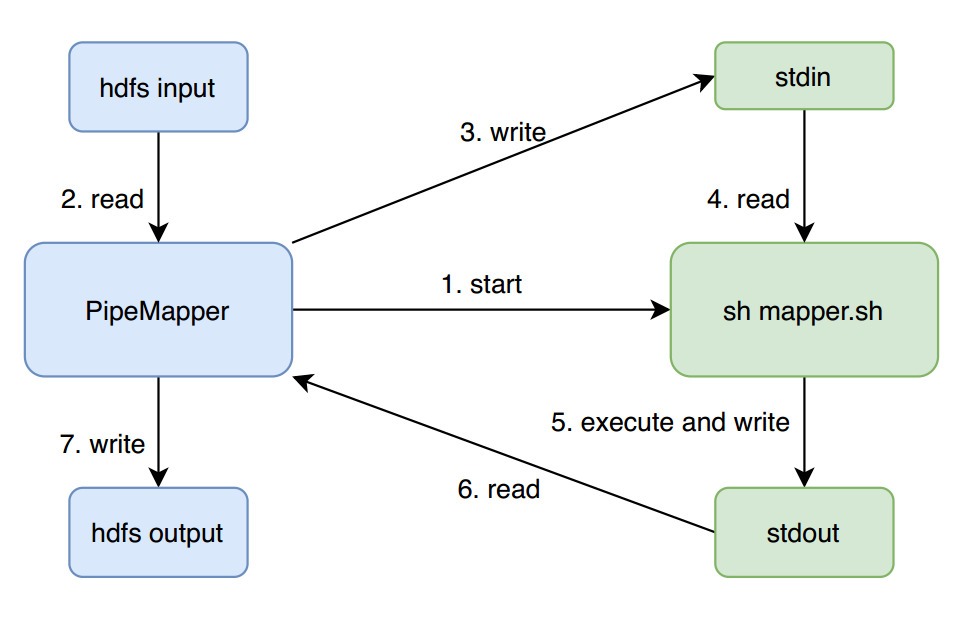

Hadoop Streaming 是 Hadoop 提供的一个工具， 用户可以使用它来创建和运行一类特殊的 MapReduce 任务， 这些 MR 任务可以使用任何可执行文件或脚本作为 mapper 和 reducer。
比如，简单的 word count 任务可使用 Hadoop Streaming 简单写为：
1 |
|
工作原理
Hadoop Streaming 会创建一个 MR 任务， 然后将任务提交到集群上执行，同时监控这个任务的整个执行过程。如果 mapper 和 reducer 都是可执行文件，streaming 程序会使用 PipeMapper 和 PipeReducer 来做一个类似代理的 Mapper 和 Reducer，它们负责启动实际的 mapper 和 reducer 可执行文件，然后从 HDFS 读取输入数据，再一行一行写入到可执行文件进程的标准输入，同时读取可执行文件进程处理完数据后输出到标准输出的数据，将其写出到 Mapper 和 Reducer 真正的输出中。
以一个没有 reduce 阶段的 Streaming 程序为例，其 Mapper 简要运行流程可见下图：

PipeMapper 在启动 mapper.sh 后， 不断重复 2-7 （一次 map ）过程，直到所有数据处理完成。
与 PipeMapper 类似，PipeReducer 会将从 map 端 shuffle 过来数据，一行行的写到 reducer.sh 进程的标准输入，然后收集 reducer.sh 进程的标准输出，最终写出到 hdfs output。
以上就是是 MapReduce 框架和 streaming mapper/reducer 之间的基本处理流程。所以，用户在编写Streaming 程序的 mapper 和 reducer 时，只需要从不断 stdin 中一行行读取数据，处理然后输出到标准输出中即可。
同时，用户也可以使用 java 类作为 mapper 或者 reducer 。上面的例子与这里的代码等价：
1 | hadoop jar /usr/lib/hadoop-mapreduce/hadoop-streaming.jar \ |
用户也可以设定 stream.non.zero.exit.is.failure true 或 false 来表明 streaming task 的返回值非零时是 Failure 还是 Success。默认情况，streaming task 返回非零时表示失败。
参数配置
Hadoop Streaming 支持 Streaming 命令参数配置以及 Hadoop 通用的参数配置。 常规命令行语法如下所示。
1 | hadoop command [genericOptions] [streamingOptions] |
注意：确保通用参数放置在 Streaming 的参数配置之前，否则命令将会失败。 具体可查看后续的示例。
Streaming 参数配置
Streaming 命令参数配置具体如下表所示：
| 参数 | 必选 | 意义 |
|---|---|---|
| -input directoryname or filename | 是 | 设置输入数据路径，可以是文件或者目录。可通过重复配置，添加多个输入路径 |
| -output directoryname | 是 | 设置指定输出数据路径，必须是目录。输出路径只能有一个 |
| -mapper executable or JavaClassName | 是 | 设置可执行的 mapper |
| -reducer executable or JavaClassName | 是 | 设置可执行的 reducer |
| -file filename | 否 | 设置需要同步到计算节点的文件，可以使可执行的 mapper，reducer 或 combiner 文件在计算节点本地可用。可以通过重复配置，同步多个文件 |
| -inputformat JavaClassName | 否 | 设置 InputFormat，用来将输入文件读取成 key/value 对，如果未设置默认使用 TextInputFormat |
| -outputformat JavaClassName | 否 | 设置 OutputFormat，用来将输出的 key/value 对写出到输出文件，如果未设置默认使用 TextOutputFormat |
| -partitioner JavaClassName | 否 | 设置 Partitioner， 用来根据 key 确定数据应该指派到的 reduce |
| -combiner streamingCommand or JavaClassName | 否 | 设置 Combiner，用来在 mapper 端归并 mapper 的输出 |
| -cmdenv name=value | 否 | 设置环境变量，可以在 mapper 或者 reducer 运行时获取 |
| -inputreader | 否 | 设置 InputReader 类，用于读取输入数据，取代 InputFormat Class |
| -verbose | 否 | 设置是否输出日志 |
| -lazyOutput | 否 | 设置是否延迟输出 |
| -numReduceTasks | 否 | 设置 reducer 任务数量 |
| -mapdebug | 否 | 设置 mapper debug 脚本，在 mapper 任务运行失败时执行 |
| -reducedebug | 否 | 设置 reducer debug 脚本， reducer 任务运行失败时执行 |
通用参数配置
Streaming 任务同时支持 Hadoop 通用的参数配置，主要的参数配置有以下几个：
| 参数 | 必选 | 意义 |
|---|---|---|
| -conf configuration_file | 否 | 指定配置文件 |
| -D property=value | 否 | 设置参数的值 |
| -fs host:port or local | 否 | 指定一个 namenode |
| -files | 否 | 指定需要拷贝到集群的文件，多个文件以逗号分隔 |
| -libjars | 否 | 指定需要添加到任务 classpath 的 jar 文件，多个文件以逗号分隔 |
| -archives | 否 | 指定需要解压到计算节点的压缩文件，多个文件以逗号分隔 |
参数配置示例
下面我们通过一些示例来展示具体的 Streaming 任务参数配置。
设置 Mapper Reducer
使用可执行文件作为 mapper 和 reducer
1 | hadoop jar /usr/lib/hadoop-mapreduce/hadoop-streaming.jar \ |
使用 Java Class 作为 mapper，指定 InputFormat
1 | hadoop jar /usr/lib/hadoop-mapreduce/hadoop-streaming.jar \ |
提交任务时打包文件
如上文所述，我们可以指定任意的可执行文件作为 mapper 或者 reducer。在提交 Hadoop Streaming 任务时， 可执行的 mapper 或者 reducer 执行文件并不必已经存在 Hadoop 集群的任意一台机器上。如果不存在，我们只需要在提交任务时的时候使用 -file 参数指定需要的文件，告诉集群在提交任务时将这些文件打包，这样Hadoop 会自动将这些文件打包上传到 Hdfs，并同步到每个计算节点。
1 | hadoop jar /usr/lib/hadoop-mapreduce/hadoop-streaming.jar \ |
同时，你也可以指定一些依赖文件，打包上传到集群上,提供给 mapper 或者 reducer 任务使用
1 | hadoop jar /usr/lib/hadoop-mapreduce/hadoop-streaming.jar \ |
指定任务的其他插件
跟普通的 MR 任务一样，我们可以指定任务运行时的一些插件
1 | -inputformat JavaClassName |
设置环境变量
我们也可以通过参数设置任务运行时的环境变量，并且可以在 mapper 或者 reducer 运行时获取环境变量的值。
1 | hadoop jar /usr/lib/hadoop-mapreduce/hadoop-streaming.jar \ |
设置 reducer 数量
通常，我们需要为任务设置合适的 reducer 数量，默认的 reducer 数量是 1，具体的 reducer 数量应当根据业务需求以及可使用资源等因素来确定。
reducer 数量可以使用 Streaming 配置 -numReduceTasks 10 或者通用参数 -D mapreduce.job.reduces=10 来设置。如下，我们将任务的 reducer 数量设为 10。
1 | hadoop jar /usr/lib/hadoop-mapreduce/hadoop-streaming.jar \ |
对于 map-only 的任务，在 map 结束后直接输出结果即可，不需要进行 reduce，这时我们需要将 reducer 数量设为 0。设置 -D mapreduce.job.reduces=0 或者 -reducer=NONE 即可。
依赖大文件或者归档文件
很多 Streaming 任务在运行时需要依赖某些特定的文件或者环境，比如某些分词任务依赖字典文件，或某个python 实现的机器学习任务依赖指定的 module 。此时，我们就需要将依赖的文件或者归档上传到 HDFS 上， 并使用 -files 和 -archives 选项指定已上传的依赖文件或者归档的 HDFS 路径，任务运行时将会将指定的依赖文件和归档分发到各个计算节点上，任务运行时即可依赖这些文件进行相应的操作。
注意：-files 和 -archives 选项都是通用选项,需要放在 Streaming 命令配置前，否则会导致任务启动失败
-files 选项指定的依赖文件会在任务启动之前分发到当前计算节点上。依赖文件分完成后，会在任务的工作目录里建个软链指向它。
如下示例，Hadoop 会在任务的当前工作目录中自动创建名为 dict.txt 的符号链接，指向 dict.txt 的实际复制到的本地路径。任务直接通过软链引用文件即可。
1 | -files hdfs://host:port/tmp/cache/dict.txt |
用户也可以自己指定符号链接的名称，如下示例，将建立名为 dict 的软链。
1 | -files hdfs://host:port/tmp/cache/dict.txt#dict |
对于多个依赖文件，可以用逗号分隔
1 | -files hdfs://host:port/tmp/cache/dict.txt,hdfs://host:port/tmp/cache/test.txt |
-archives 选项指定的归档文件会在任务启动之前分发到当前计算节点上，对于使用某些压缩的归档文件（tar 或 jar）分发到计算节点上后， Hadoop 会自动将其解压到一个目录里，并在任务的工作目录里建个软链指向这个目录。
如下示例，Hadoop 会在任务的当前工作目录中自动创建名为 dict.tar.gz 的符号链接，指向 dict.tar.gz 解压到的目录。
1 | -archives hdfs://host:port/tmp/cache/dict.tar.gz |
用户也可以自己指定符号链接的名称，如下示例，将建立名为 mydict 的软链。
1 | -archives hdfs://host:port/tmp/cache/dict.tar.gz#mydict |
指定多个归档依赖文件，可以用逗号分隔。
1 | -archives hdfs://host:port/tmp/cache/dict.tar.gz,hdfs://host:port/tmp/cache/test.tar.gz |
对于任务依赖包含许多文件的目录时，如 python 依赖的某些集群上不存在的第三方 module， 我们可以先将整个目录归档压缩后上传到 HDFS 上，并使用 -archives 指定上传后的路径，即可在python 实现的 mapper 或 reducer 运行时引用 module 进行相关的计算。
1 |
|
Streaming 任务本地测试
因为在集群上对失败任务进行 debug 比较麻烦一些，所以在提交任务之前，建议先在本地对任务进行简单的测试，测试通过后再提交到集群。
简单测试命令如下：
1 | cat inputfile | sh mapper.sh | sort |sh reducer.sh > output |